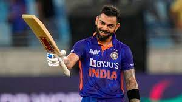

India has given to the world many a great cricketer but perhaps none as ambitious as Virat Kohli. To meet his ambition, Kohli employed the technical assiduousness of Sachin Tendulkar and fitness that was in the league of top athletes in the world, not just cricketers. As a result, Kohli became the most consistent all-format accumulator of his time, making jaw-dropping chases look easy, and finding, in his own words, the safest possible way to score runs. Plenty of them.
This ambition transferred seamlessly to his captaincy: he demanded more than ever of his bowlers especially the quick ones, often sacrificed a batsman for bowling depth, and led India to a long stay at No. 1 in Test rankings and a first-ever series win in Australia. He is well on his way to end up as India's most successful Test captain.
An Under-19 world Cup-winning captain, when he burst onto the scene, Kohli was a precocious talent with a cover drive to kill for. He was destined to be India's next big batsman as the Tendulkar era began to retire, but Kohli wanted to be more: a cricketer whom the opposition would be in awe of, a cricketer whose presence would raise the intensity of the contest. He lived every ball, competed each moment, and made sure he had the fitness and strength to do so. He was widely credited for changing the fitness culture in Indian cricket, introducing endurance tests as a criterion for selection.
